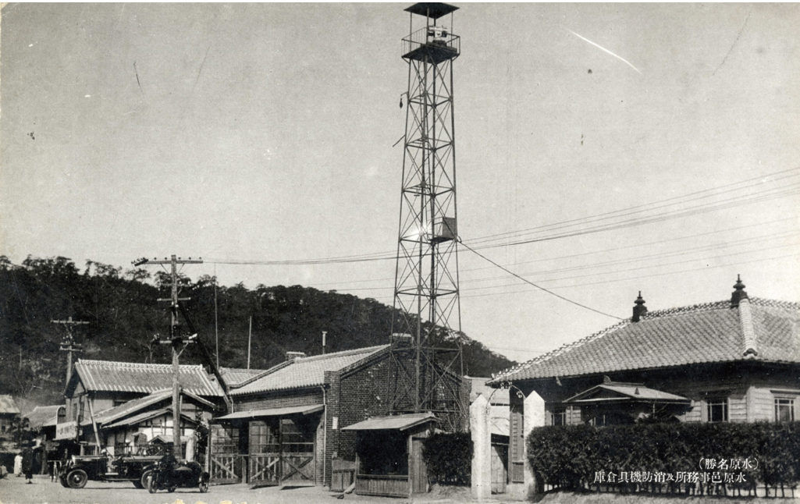

About the Archive
Who spoke
for Suwon?누가 수원을 대표해 왔는가
수원시의원 디지털 아카이브는 1920년대 면협의회부터 오늘의 수원시의회까지, 지역을 대표해 온 사람들의 사회적 배경을 기록하고 공유하기 위해 만들어졌습니다.
PURPOSE아카이브 소개
지방의회는 가장 가까운 정치의 무대입니다. 그러나 그 자리를 누가 채워 왔는지, 그들이 어떤 직업과 경력을 거쳐 의원이 되었는지는 흩어진 신문 기사와 의회사, 개인 소장 사진 속에 나뉘어 있습니다.
이 아카이브는 연구서 한 장(章)에 담긴 사료와 통계, 인물 정보를 검색 가능한 디지털 자료로 다시 구성하였습니다. 자산가가 독점하던 식민지기의 면협의회, 관료·청년단 출신이 주도한 전후 시의회, 그리고 시민운동가와 여성 의원이 등장한 1991년 이후까지 — 의원의 얼굴을 통해 수원과 한국 사회의 변화를 읽는 것이 목표입니다.
SOURCE TEXT원문 정보
수원시의원으로
살다Ⅱ
살다Ⅱ
수원시의원들의 사회적 배경
- BOOK
- 『수원시의원으로 살다』 (2021)
- CHAPTER
- Ⅱ. 수원시의원들의 사회적 배경 (Introduction)
- PAGES
- pp.120 — 153
- AUTHORS
- 황병주 (국사편찬위원회 편사연구관)
유상희 (서울대학교 석사) - CONTENTS
- 자치와 통치 그리고 정치 · 지방자치 부활 이전 시의원 충원과 배경 · 지방자치 부활과 의원들의 변화 · 주민 자치와 지방 자치
STRUCTURE아카이브 구성
METADATA기술 항목
모든 자료는 아래 항목으로 기술됩니다. 각 자료 상세 화면에서 원문 쪽수(CITATION)를 확인할 수 있습니다.
| 항목 | 내용 | 예시 |
|---|---|---|
| TITLE | 자료명 | 제1대 당선 시의원 좌담회 기념 촬영 |
| DATE | 생산 연도 · 일자 | 1952 |
| ERA | 시대 구분 | 전후 시의회 (1952—1961) |
| TYPE | 자료 유형 | 사진 · 신문 · 포스터 · 선거자료 · 통계표 · 인물 |
| SOURCE / HOLDER | 출처 · 소장처 | 차인순 유족 제공 |
| CITATION | 원문 수록 쪽 | 『수원시의원으로 살다』 Ⅱ, p.135 |
| TAGS | 인물 · 기관 · 주제어 | #제1대 #윤긍렬 #최학배 |
SOURCES자료 출처
수원박물관사진 · 포스터 · 선거자료
수원시의회개원 기념사진 · 『수원시의회사』 · 『의원총람』
중앙선거관리위원회선거공보
차인순 유족1950년대 사진
『동아일보』 · 『조선일보』1920—1950년대 기사
『매일신보』1930년대 기사
GUIDE이용 안내
- 이 사이트는 비영리 교육·연구 목적으로 제작되었습니다.
- 수록 이미지의 저작권은 각 소장처에 있으며, 2차 이용 시 소장처의 허락을 받아야 합니다.
- 자료를 인용할 때는 원문 『수원시의원으로 살다』의 해당 쪽수를 함께 밝혀 주세요.
- 검색은 자료명·설명·인물명·소장처·태그를 대상으로 하며, 띄어쓰기와 관계없이 찾을 수 있습니다.
- 자료 상세 화면의 주소(예: collection.html#council-1952)를 복사해 특정 자료를 공유할 수 있습니다.
CONTRIBUTE자료 기증 · 문의
집안에 잠든 의정 기록이 있나요?
사진, 선거공보, 회의 자료 등 수원 지방의회와 관련된 자료를 기다립니다.